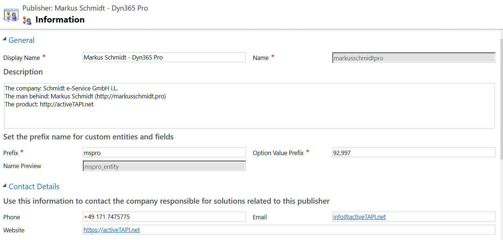
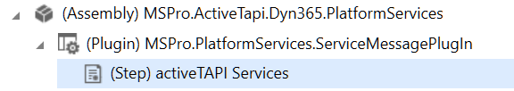

Solution Components
| Field | Content |
|---|---|
| Publisher Display Name | Markus Schmidt - Dyn365 Pro |
| Publisher Name | markusschmidtpro |
| Prefix | mspro |
| Website | http://activeTAPI.net |

The activeTAPI Managed Solution contains the following components:
Entities
mspro_servicemessage
This is a core entity of the MSPro-Dynamics Services Platform. This entity does not have a user-interface.
mspro_settings
This entity contains all settings required for activeTAPI. The entity is available under Settings --> Extensions --> activeTAPI Settings. After solution import, this entity is empty and the configuration keys need to be set manually, when required (see activeTAPI configuration)
JavaScript
The two JavaScript files:
mspro_/js/activeTapi.jsandmspro_/js/platformServcies.js
The files contain the JavaScript lettings forms communicate with your Dynamics CRM 365 Server.
It is important to mention that the Dynamics 365 Client will only communicate with your Dynamics CRM 365 server, using standard SDK functionality:
Xrm.WebApi.createRecord("mspro_servicemessage", serviceMessage).then( .... The client will not call or use any resource outside of your 'safe' Microsoft Dynamics CRM 365 environment.
Plugin
activeTAPI uses one Plugin that is registered on the mspro_servicemessageentity as follows:

It is important to notice that this Plugin does not execute on any existing entity!

The purpose of this Plugin is, to execute activeTAPI service requests. This means, all activeTAPI logic is server-side and executes in the context of this Plugin.